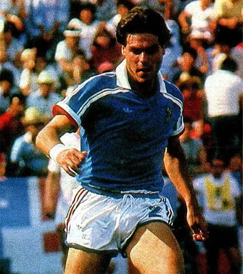

Photo source ↗Unknown author · Public domain
The profile
Manuel Amorós
Manuel Amorós was a French full-back who played much of his club football for Monaco and Marseille. His pace allowed him to support attacks from defence.
Amorós represented Monaco and Marseille during his club career. Comfortable on either flank, he could defend deep and then advance to support France’s attacks.
Amorós played for France at the 1982 World Cup, when the team reached the semi-finals. He is included in retrospective young-player selections for that tournament.
1982Spain
Fourth place
Group D France4 : 1Kuwait
- Bernard GENGHINI31′
- Michel PLATINI43′
- Didier SIX48′
- Maxime BOSSIS89′
- Abdulaziz AL BALUSHI75′
Francehome
Starting lineup
- Jean Luc ETTORI
- Manuel AMOROS
- Maxime BOSSIS
- Gerard JANVION
- Marius TRESOR
- Bernard GENGHINI
- Michel PLATINI
- Alain GIRESSE
- Bernard LACOMBE
- Didier SIX
- Gerard SOLER
Substitutions
- 59′Christian LOPEZ on · Gerard JANVION off
- 81′Rene GIRARD on · Michel PLATINI off
Kuwaitaway
Starting lineup
- Ahmed AL TARABULSI
- Naim FAJAH
- MAHBOUB MUBARAK
- Walid AL MUBARAK
- Abdullah MAYUF
- Saad AL HUTTI
- Abdulaziz AL BALUSHI
- Mohamed KARAM
- Jasem SULTAN
- Abdulaziz AL ANBARI
- Faisal AL DAKHIL
Substitutions
- 45+1′Fathi MATAR on · Mohamed KARAM off
- 78′Hamud AL SHEMMARI on · Walid AL MUBARAK off
Group D Czechoslovakia1 : 1France
- Antonin PANENKA84′ · pen.
- Didier SIX66′
Czechoslovakiahome
Starting lineup
- Karel STROMSIK
- Jan FIALA
- Jozef BARMOS
- Rostilav VOJACEK
- Libor RADIMEC
- Premysl BICOVSKY
- Frantisek STAMBACHER
- Ladislav VIZEK
- Tomas KRIZ
- Zdenek NEHODA
- Petr JANECKA
Substitutions
- 31′Marian MASNY on · Tomas KRIZ off
- 70′Antonin PANENKA on · Petr JANECKA off
Franceaway
Starting lineup
- Jean Luc ETTORI
- Manuel AMOROS
- Maxime BOSSIS
- Gerard JANVION
- Marius TRESOR
- Bernard GENGHINI
- Michel PLATINI
- Alain GIRESSE
- Bernard LACOMBE
- Didier SIX
- Gerard SOLER
Substitutions
- 70′Alain COURIOL on · Bernard LACOMBE off
- 89′Rene GIRARD on · Gerard SOLER off
Second-phase Group 4 France4 : 1Northern Ireland
- Alain GIRESSE33′
- Dominique ROCHETEAU46′
- Dominique ROCHETEAU68′
- Alain GIRESSE80′
- Gerry ARMSTRONG75′
Francehome
Starting lineup
- Jean Luc ETTORI
- Manuel AMOROS
- Maxime BOSSIS
- Gerard JANVION
- Marius TRESOR
- Bernard GENGHINI
- Michel PLATINI
- Alain GIRESSE
- Jean TIGANA
- Dominique ROCHETEAU
- Gerard SOLER
Substitutions
- 63′Didier SIX on · Gerard SOLER off
- 83′Alain COURIOL on · Dominique ROCHETEAU off
Northern Irelandaway
Starting lineup
- Pat JENNINGS
- Jimmy NICHOLL
- Mal DONAGHY
- Chris NICHOLL
- John McCLELLAND
- David McCREERY
- Martin O NEILL
- Sam McILROY
- Gerry ARMSTRONG
- Billy HAMILTON
- Norman WHITESIDE
Substitutions
- 86′John O NEILL on · David McCREERY off
Semifinal West Germany3 : 3France
- Pierre LITTBARSKI17′
- Karl-Heinz RUMMENIGGE102′
- Klaus FISCHER108′
- Michel PLATINI26′ · pen.
- Marius TRESOR92′
- Alain GIRESSE98′
West Germanyhome
Starting lineup
- Harald SCHUMACHER
- Hans Peter BRIEGEL
- Karlheinz FOERSTER
- Bernd FOERSTER
- Uli STIELIKE
- Manfred KALTZ
- Paul BREITNER
- Wolfgang DREMMLER
- Pierre LITTBARSKI
- Felix MAGATH
- Klaus FISCHER
Substitutions
- 73′Horst HRUBESCH on · Felix MAGATH off
- 97′Karl-Heinz RUMMENIGGE on · Hans Peter BRIEGEL off
Franceaway
Starting lineup
- Jean Luc ETTORI
- Manuel AMOROS
- Maxime BOSSIS
- Gerard JANVION
- Marius TRESOR
- Bernard GENGHINI
- Michel PLATINI
- Alain GIRESSE
- Jean TIGANA
- Dominique ROCHETEAU
- Didier SIX
Substitutions
- 50′Patrick BATTISTON on · Bernard GENGHINI off
- 60′Christian LOPEZ on · Patrick BATTISTON off
Third-place match Poland3 : 2France
- Andrzej SZARMACH40′
- Stefan MAJEWSKI44′
- Janusz KUPCEWICZ46′
- Rene GIRARD13′
- Alain COURIOL72′
Polandhome
Starting lineup
- Jozef MLYNARCZYK
- Marek DZIUBA
- Janusz KUPCEWICZ
- Pawel JANAS
- Wladyslaw ZMUDA
- Stefan MAJEWSKI
- Waldemar MATYSIK
- Andrzej BUNCOL
- Grzegorz LATO
- Andrzej SZARMACH
- Zbigniew BONIEK
Substitutions
- 45+1′Roman WOJCICKI on · Waldemar MATYSIK off
Franceaway
Starting lineup
- Jean CASTANEDA
- Manuel AMOROS
- Gerard JANVION
- Philippe MAHUT
- Marius TRESOR
- Rene GIRARD
- Jean Francois LARIOS
- Jean TIGANA
- Bruno BELLONE
- Alain COURIOL
- Gerard SOLER
Substitutions
- 66′Christian LOPEZ on · Gerard JANVION off
- 83′Didier SIX on · Jean TIGANA off
1986Mexico
Third place
Group C France1 : 0Canada
- Jean-Pierre PAPIN79′
Francehome
Starting lineup
- Joel BATS
- Manuel AMOROS
- Patrick BATTISTON
- Maxime BOSSIS
- Thierry TUSSEAU
- Luis FERNANDEZ
- Michel PLATINI
- Alain GIRESSE
- Jean TIGANA
- Jean-Pierre PAPIN
- Dominique ROCHETEAU
Substitutions
- 70′Yannick STOPYRA on · Dominique ROCHETEAU off
Canadaaway
Starting lineup
- Paul DOLAN
- Bob LENARDUZZI
- Bruce WILSON
- Ian BRIDGE
- Randy SAMUEL
- Randy RAGAN
- Mike SWEENEY
- Paul JAMES
- David NORMAN
- Carl VALENTINE
- Igor VRABLIC
Substitutions
- 54′James LOWERY on · Mike SWEENEY off
- 81′Branko SEGOTA on · Paul JAMES off
Group C France1 : 1Soviet Union
- Luis FERNANDEZ62′
- Vasili RATS53′
Francehome
Starting lineup
- Joel BATS
- Manuel AMOROS
- William AYACHE
- Patrick BATTISTON
- Maxime BOSSIS
- Luis FERNANDEZ
- Michel PLATINI
- Alain GIRESSE
- Jean TIGANA
- Jean-Pierre PAPIN
- Yannick STOPYRA
Substitutions
- 76′Bruno BELLONE on · Jean-Pierre PAPIN off
- 83′Philippe VERCRUYSSE on · Alain GIRESSE off
Soviet Unionaway
Starting lineup
- Rinat DASAEV
- Vladimir BESSONOV
- Anatoli DEMYANENKO
- Oleg KUZNETSOV
- Nikolai LARIONOV
- Ivan YAREMCHUK
- Pavel YAKOVENKO
- Aleksandr ZAVAROV
- Serguei ALEINIKOV
- Vasili RATS
- Igor BELANOV
Substitutions
- 58′Oleg BLOKHIN on · Aleksandr ZAVAROV off
- 68′Sergei RODIONOV on · Pavel YAKOVENKO off
Group C France3 : 0Hungary
- Yannick STOPYRA29′
- Jean TIGANA62′
- Dominique ROCHETEAU84′
Francehome
Starting lineup
- Joel BATS
- Manuel AMOROS
- William AYACHE
- Patrick BATTISTON
- Maxime BOSSIS
- Luis FERNANDEZ
- Michel PLATINI
- Alain GIRESSE
- Jean TIGANA
- Jean-Pierre PAPIN
- Yannick STOPYRA
Substitutions
- 61′Dominique ROCHETEAU on · Jean-Pierre PAPIN off
- 71′Jean-Marc FERRERI on · Yannick STOPYRA off
Hungaryaway
Starting lineup
- Peter DISZTL
- Sandor SALLAI
- Antal ROTH
- Jozsef VARGA
- Jozsef KARDOS
- Imre GARABA
- Laszlo DAJKA
- Lajos DETARI
- Peter HANNICH
- Marton ESTERHAZY
- Kalman KOVACS
Substitutions
- 45+1′Antal NAGY on · Peter HANNICH off
- 65′Gyorgy BOGNAR on · Kalman KOVACS off
Round of 16 France2 : 0Italy
- Michel PLATINI15′
- Yannick STOPYRA57′
Francehome
Starting lineup
- Joel BATS
- Manuel AMOROS
- William AYACHE
- Patrick BATTISTON
- Maxime BOSSIS
- Luis FERNANDEZ
- Michel PLATINI
- Alain GIRESSE
- Jean TIGANA
- Dominique ROCHETEAU
- Yannick STOPYRA
Substitutions
- 73′Thierry TUSSEAU on · Luis FERNANDEZ off
- 85′Jean-Marc FERRERI on · Michel PLATINI off
Italyaway
Starting lineup
- Giovanni GALLI
- Giuseppe BERGOMI
- Antonio CABRINI
- Gaetano SCIREA
- Pietro VIERCHOWOD
- Salvatore BAGNI
- Giuseppe BARESI
- Fernando DE NAPOLI
- Bruno CONTI
- Alessandro ALTOBELLI
- Giuseppe GALDERISI
Substitutions
- 45+1′Antonio DI GENNARO on · Giuseppe BARESI off
- 58′Gianluca VIALLI on · Giuseppe GALDERISI off
Quarterfinal Brazil1 : 1France
- CARECA17′
- Michel PLATINI41′
Brazilhome
Starting lineup
- CARLOS
- EDINHO
- JUNIOR
- JOSIMAR
- JULIO CESAR
- BRANCO
- ALEMAO
- SOCRATES
- ELZO
- MULLER
- CARECA
Substitutions
- 71′ZICO on · MULLER off
- 90+1′SILAS on · JUNIOR off
Franceaway
Starting lineup
- Joel BATS
- Manuel AMOROS
- Patrick BATTISTON
- Maxime BOSSIS
- Thierry TUSSEAU
- Luis FERNANDEZ
- Michel PLATINI
- Alain GIRESSE
- Jean TIGANA
- Dominique ROCHETEAU
- Yannick STOPYRA
Substitutions
- 84′Jean-Marc FERRERI on · Alain GIRESSE off
- 99′Bruno BELLONE on · Dominique ROCHETEAU off
Semifinal West Germany2 : 0France
- Andreas BREHME9′
- Rudi VOELLER90′
West Germanyhome
Starting lineup
- Harald SCHUMACHER
- Hans Peter BRIEGEL
- Andreas BREHME
- Karlheinz FOERSTER
- Norbert EDER
- Ditmar JAKOBS
- Lothar MATTHAEUS
- Felix MAGATH
- Wolfgang ROLFF
- Karl-Heinz RUMMENIGGE
- Klaus ALLOFS
Substitutions
- 57′Rudi VOELLER on · Karl-Heinz RUMMENIGGE off
Franceaway
Starting lineup
- Joel BATS
- Manuel AMOROS
- William AYACHE
- Patrick BATTISTON
- Maxime BOSSIS
- Luis FERNANDEZ
- Michel PLATINI
- Alain GIRESSE
- Jean TIGANA
- Bruno BELLONE
- Yannick STOPYRA
Substitutions
- 66′Daniel XUEREB on · Bruno BELLONE off
- 72′Philippe VERCRUYSSE on · Alain GIRESSE off
Third-place match France4 : 2Belgium
- Jean-Marc FERRERI27′
- Jean-Pierre PAPIN43′
- Bernard GENGHINI104′
- Manuel AMOROS111′ · pen.
- Jan CEULEMANS11′
- Nico CLAESEN73′
Francehome
Starting lineup
- Albert RUST
- Manuel AMOROS
- Patrick BATTISTON
- Michel BIBARD
- Yvon LE ROUX
- Jean-Marc FERRERI
- Bernard GENGHINI
- Jean TIGANA
- Philippe VERCRUYSSE
- Bruno BELLONE
- Jean-Pierre PAPIN
Substitutions
- 55′Maxime BOSSIS on · Yvon LE ROUX off
- 83′Thierry TUSSEAU on · Jean TIGANA off
Belgiumaway
Starting lineup
- Jean Marie PFAFF
- Eric GERETS
- Michel RENQUIN
- Georges GRUN
- Stephane DEMOL
- Patrick VERVOORT
- Enzo SCIFO
- Jan CEULEMANS
- Raymond MOMMENS
- Nico CLAESEN
- Daniel VEYT
Substitutions
- 45+1′Franky VAN DER ELST on · Michel RENQUIN off
- 64′Leo VAN DER ELST on · Enzo SCIFO off